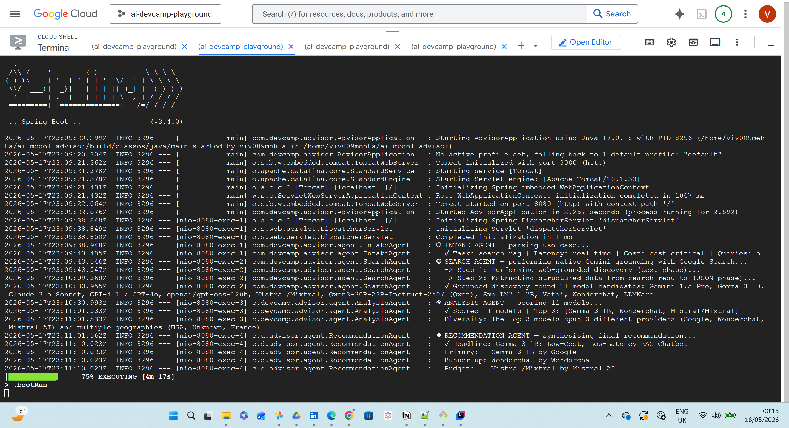
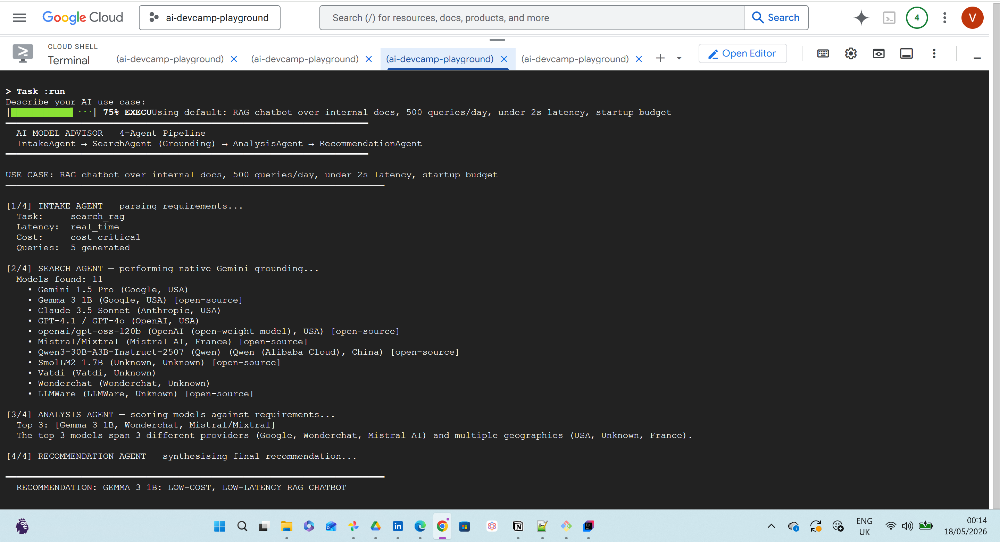
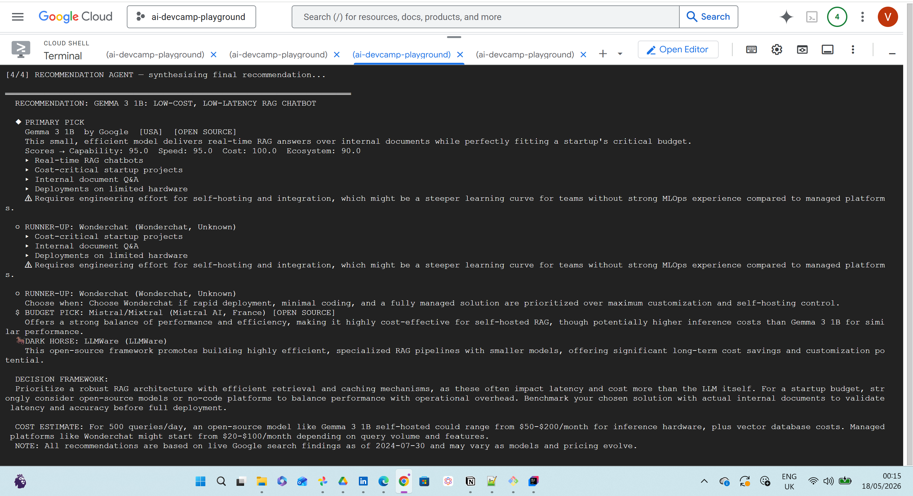
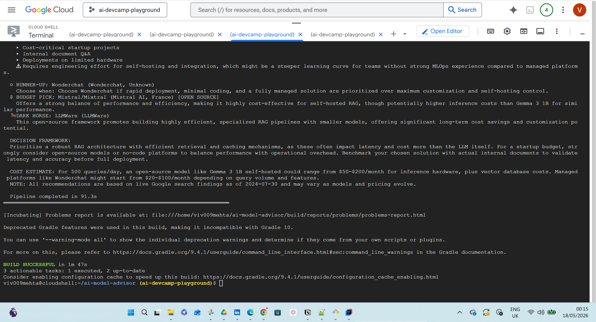

The idea
Choosing an AI model is becoming a product decision, not just an engineering detail. This prototype explores how a multi-agent workflow can support that decision by combining intake, grounded discovery, comparative scoring, and final recommendation synthesis.
- Capture the use case and decision constraints.
- Discover current model candidates with grounded search.
- Score options across cost, latency, capability, and fit.
- Explain the recommendation in language a product or engineering team can act on.
Pipeline flow
1IntakeAgent parses the use case
2SearchAgent performs grounded discovery
3AnalysisAgent scores the candidates
4RecommendationAgent produces the final pick



